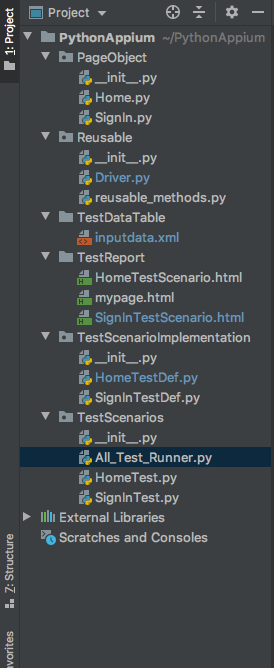

Final Python Selenium Test Automation Framework Looks like below.

Code to create a Test Runner file to run all test as below.
import unittest from TestScenarios import HomeTest, SignInTest # get all tests from SearchText and HomePageTest class Home_Page_Execution = unittest.TestLoader().loadTestsFromTestCase(HomeTest.HomeTestClass) SignIn_Page_Execution = unittest.TestLoader().loadTestsFromTestCase(SignInTest.SignInTestClass) # create a test suite combining search_text and home_page_test test_suite = unittest.TestSuite([Home_Page_Execution, SignIn_Page_Execution]) # run the suite unittest.TextTestRunner(verbosity=2).run(test_suite)
HomeTestClass,SignInTestClass") These are two test classes which we are calling for execution. When we need to add more scenario , just copy and paste same line and change the Class file name as per test scenario name.